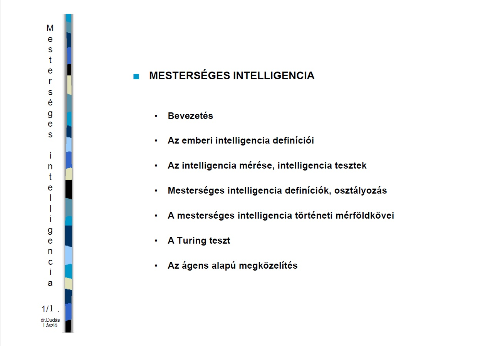

Mesterséges intelligencia alapok

Ez a tárgy a mesterséges intelligenciával kapcsolatos információk
alapjait tartalmazza
Tartalom
- Bevezetés és történeti háttér.
- MI alkalmazási területek. logikai játékok.
- Természetes nyelvek feldolgozása.
- Tudásszemléltetés formális logikával.
- MI nyelvek. A LISP programozási nyelv.
- Kereső eljárások.
- Mintaillesztés.
- Tudásszemléltetés szemantikus hálóval.
- Mesterséges neurális hálók.
- Előrecsatolt mesterséges neuron-hálók.
- Hátracsatolt mesterséges neurális hálók.